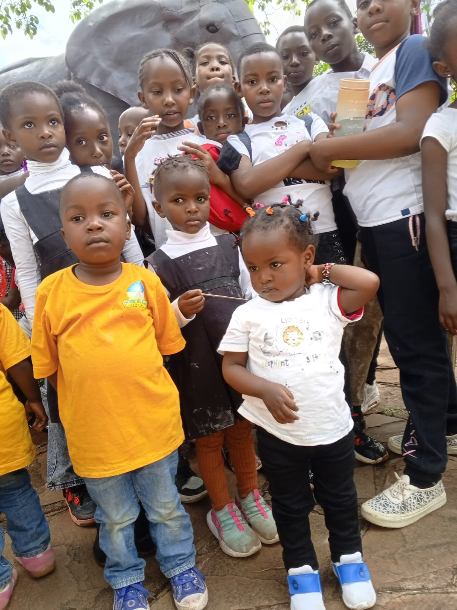
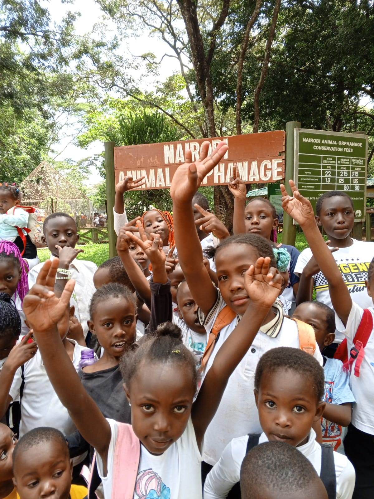
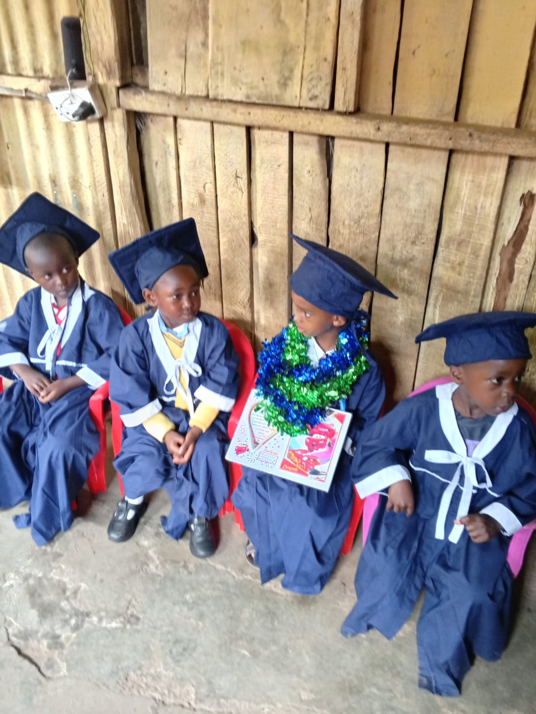
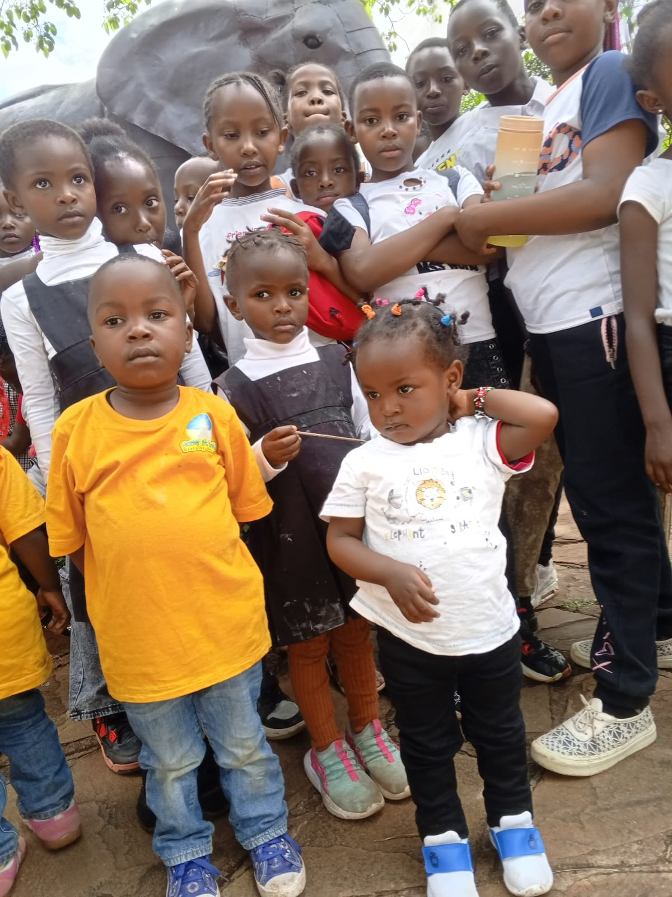
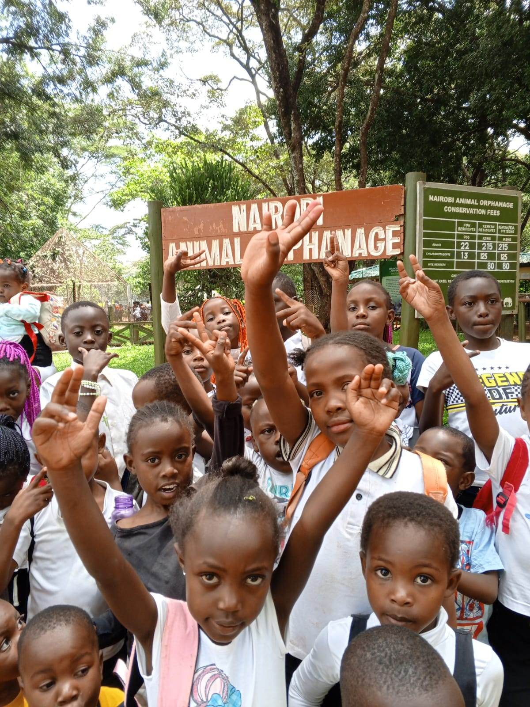
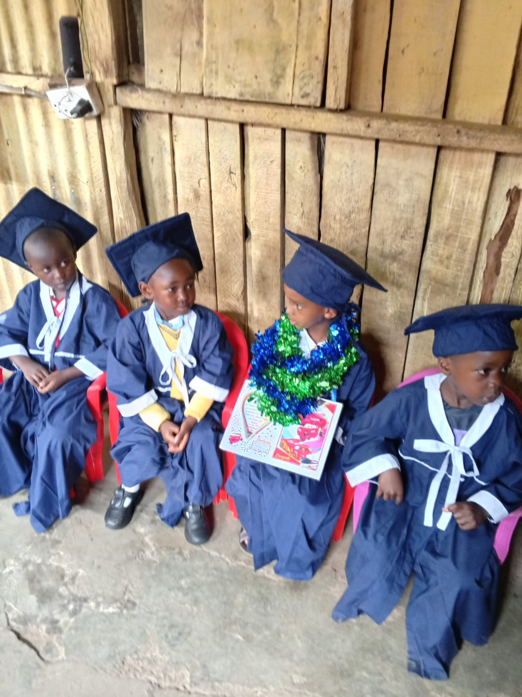

MCHUNGAJI MWEMA COMMUNITY BASED ORGANISATION
About Us
Mission: To provide quality early childhood education, food, and care to children in the Kuwinda slums through love, learning, and community support.
Vision: A thriving future for every child through inclusive, community-led education.
Goal: Nurturing young minds in the heart of Kuwinda slums, Lang’ata
Our Story: Mchungaji Mwema Community Based Organisation (MMCBO)founded by local caregivers and supported by international donors (primarily from the U.S.), we support vulnerable children under 10 with education, meals, and play in a safe environment.
MMCBO is a registered charitable community-based organization based at Kuwinda Ward, Nairobi County. Founded and started its operations in 2017 and registered as a charitable community-based organization in 2021, under the Ministry of East African Community (EAC) Labour and Social Protection to address the social problems facing the children in the country through mentorship. Mchungaji Mwema is a Swahili word meaning a good shephard and aims to live by its name and become a beacon of blessings in the field of mentorship and education.Facts about Kuwinda slum: Kuwinda is a low-income, informal settlement in Nairobi, Kenya, characterized by densely packed housing, limited access to basic services, and a high population density. Many households consist of 4-7 members living in cramped, one-room structures, often with earth floors and without running water, electricity, or proper sanitation.
Due to the minimal educational opportunities, the unemployment rate is very high with most employed as casual workers in seasonal jobs. Some of the tasks include washing clothes, carrying heavy loads in the markets, pulling handcarts, draining the pit latrine and garbage collection. The more affluent tend to manage informal businesses, with most women operating road-side business units offering goods at cheaper rates. Men, on the other hand, prefer more manual based income generating activities such as carpentry, welding, and construction of houses.
MMCBO core values
Empowerment: We ensure full empowerment of the underprivileged children and orphans by showing them that there is always something inside of them that can bring out the best in them. Through our various programs the children are able to feel empowered and hence impacting positive change in them.
Honesty: As a charitable society we conduct our affairs in an honest manner and thus this will guarantee all our financiers and donors that nothing will be done outside the stipulated objective and all funds will be applied to the intended purpose and full accountability will be guaranteed.
Transparency: For any organization to thrive there has to be a high level of transparency in its dealings with all bodies that are directly in contact with them, be it regulatory or direct accountability it is very key to handle all the operations in a transparent manner.
Integrity: All the members of Mchungaji Mwema community Based Organisation and have unquestionable levels of integrity, this is a guaranteed virtue to all our associates and this will ensure a smooth flow in our dealings hence fostering growth of our foundation to high levels.
Passion: Passion lies at the heart of everything we do. We are passionate about people, not issues and that’s what inspires us to create positive change for children that are driven by strategies based on logic and results.
Drive: We have a relentless drive to do more, we never do anything halfhearted. All of our energy, expertise, influence and the resource needed will go into every project or program of change we are involved in.
Our Programs
- Early Childhood Education:
The old saying goes – “Give a man a fish and you feed him for a day. Teach a man to fish and you feed him for a lifetime.”
Education may arguable be the most crucial of commodities. Without easy access to knowledge and education, these remote communities and villages are tragically left behind, halting any chance of progressing and increasing quality of life for the area.
Our children are the future of tomorrow, and as a community, we must ensure we build a strong foundation in which these children will advance to higher heights. Our exclusive focus on early childhood guarantees that the child benefits from a grand start irrespective of their background furthermore creating an inbuilt confidence to allow the child prosper in any engagement with ‘outside world.’ In this regards, we aim at three key aspects namely: Literacy, Character Molding, and Talent Management.
- Daily Feeding Program:
MMCBO provides 32 children with a warm and nutritious meal on a daily basis that is 5 days a week hence it is a daily challenge for the organization. For nearly all of these children their school meal is the only meal of the day. The project administers nutritious meals to effectively change the future of these disadvantaged children. Malnutrition during the first 1000 days of life, irreversibly stunts a child's body and brain development, permanently limiting their potential.
Parents struggle to earn enough to feed their children and malnutrition is prevalent. Many children are orphaned and cared for by relatives. Guardians raising children in an urban slum are faced by severe economic hardship and poor hygiene. Children do not know when they will eat next and the food is of poor nutritional quality. This results in malnutrition, potentially affecting the child's entire life by stunting their brain and body development.
- Spiritual & Moral Development:
As a faith-based community preschool, Mchungaji Mwema CBO places strong emphasis on nurturing the spiritual and moral foundation of every child. We introduce children to basic Christian values such as love, kindness, honesty, respect, and gratitude through daily prayers, Bible stories, songs, and memory verses. These lessons are shared in a fun and age-appropriate manner, helping children to grow in character and make good choices. - Counseling & Emotional Support:
we understand that emotional well-being is just as important as academic development. Many of the children we serve come from difficult backgrounds, including poverty, family struggles, or trauma. To support them, we create a nurturing, safe, and loving environment where each child feels seen, heard, and valued. Our teachers are trained to identify signs of emotional distress and provide basic guidance and care. For more serious cases, we work closely with community counselors, social workers, and local faith leaders to ensure children and families receive the help they need. Through regular check-ins, storytelling, play therapy, and one-on-one attention, we help children build confidence, express their feelings, and develop resilience.
We also teach children how to treat others with compassion, embrace diversity, and develop a strong sense of responsibility within the school and their community. Through spiritual guidance and moral teaching, we aim to raise children who are not only prepared for school but also for life—with a heart for others and a strong moral compass.
- Play & Social Activities:
At Mchungaji Mwema CBO Preschool, play is at the heart of our daily routine. We believe that young children learn best through play, which helps them develop essential life skills such as communication, problem-solving, creativity, and cooperation. Our program offers a variety of structured and free play activities including group games, storytelling, singing, dancing, and art projects. These activities not only promote cognitive and motor development but also foster friendships, build confidence, and create a safe and joyful environment where every child feels valued. Social interaction is encouraged to help children learn empathy, respect, and teamwork—skills that are vital both in school and in the wider community. - Parental Support & Community Involvement:
We actively engage parents through regular meetings, open days, and workshops on parenting, nutrition, and early childhood development. This strengthens the relationship between home and school, ensuring children receive consistent support. Our preschool also relies on community volunteers, local leaders, and well-wishers to assist in various areas—from storytelling and mentoring to helping with meals and maintenance. By involving the community, we create a sense of shared responsibility, promote unity, and ensure that every child has the support they need to thrive both inside and outside the classroom.
Gallery
 





Get Involved
- Sponsor a Child (monthly or one-time gift)
- Volunteer (local or remote opportunities)
- Partner With Us (corporate or church support)
M-Pesa: +254 729 317750
Bank: Kenya Commercial Bank (KCB)
Account Name: Mchungaji Mwema Community Based Organisation
Account Number: 1289082537
Branch: Karen
Contact Us
Address: Kuwinda Slums, Lang'ata, Nairobi County, Kenya
Email: Mchungajimwemacommunbasedorg@gmail.com
Phone: +254729317750
Follow Us: Facebook |